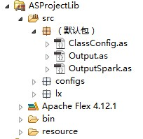
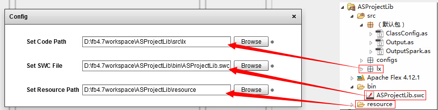
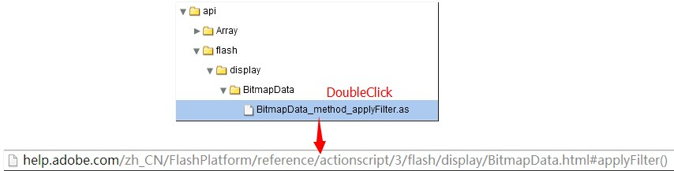
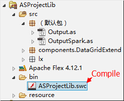
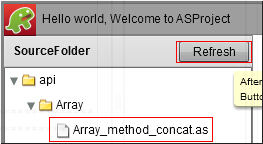
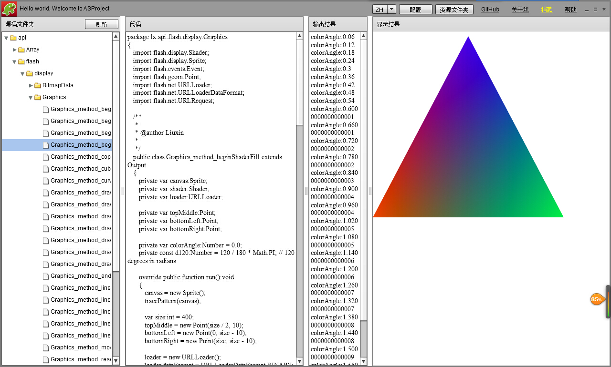
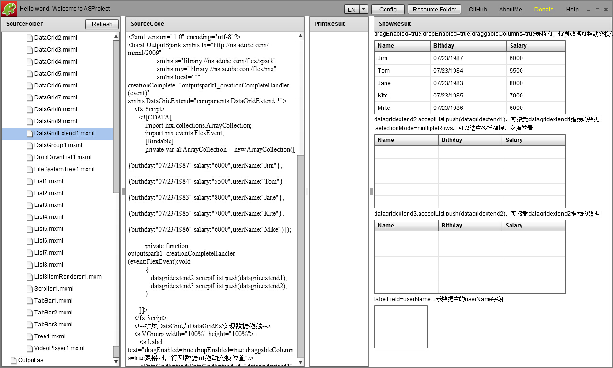

| ASProject current v1.1.1 ASProjectLib current v1.1.1，use Flex SDK 4.12.1compile，use AIR SDK13.0 Apache Flex Adobe AIR QQ Group：6719036 Donate： 1.Alipay：lxtobe5@qq.com to www.alipay.com 2.Paypal：lxtobe5@gmail.com to www.paypal.com |
This is an ActionScript3 project,for showing instance，just like TourDeFlex，but have more freedom，do a job like partner of developer.Instances from Web or myself, please downloadASProjectLib，modify the instance on local，welcome to share your instances，please contact to lxtobe5@qq.com.
1.Download and install the ASProject.exe(User of Win8 shouldn't install into system disk，in order to prevent the files and folders permissions interferes with normal use)
2.Download the ASProjectLib，which is a Flex library project，import to Flash Builder，attention to use Flex SDK and AIR SDK with the same to introduce

3.Open the ASProject.exe，Select your language（English/中文），then modify the config

4.For the first time to use，double click the instance of API directory，it will be open Adobe website of API

5.Extension(ASProjectLib)
Only for package "API"，According to the simple naming rules to create a new instance file,use the word "method" for middle name about API Function，use the word "attribute" for middle name about API attribute，all class extend Output，override write method of "run" and "dispose"，Compile to SWC with Flash Builder，in ASProject，click the "refresh" button，you can look up the result。


For instance of package "flexcomponent"，extend class "OutputSpark"，the same to up。
6.About Instance
For extend class "Output"，override write method "run" and "dispose"，output the text result with method "traceString"，output the pattern with method "tracePattern"
For extend class "OutputSpark"，override write method "run" and "dispose"，only output the text result with method "traceString"

